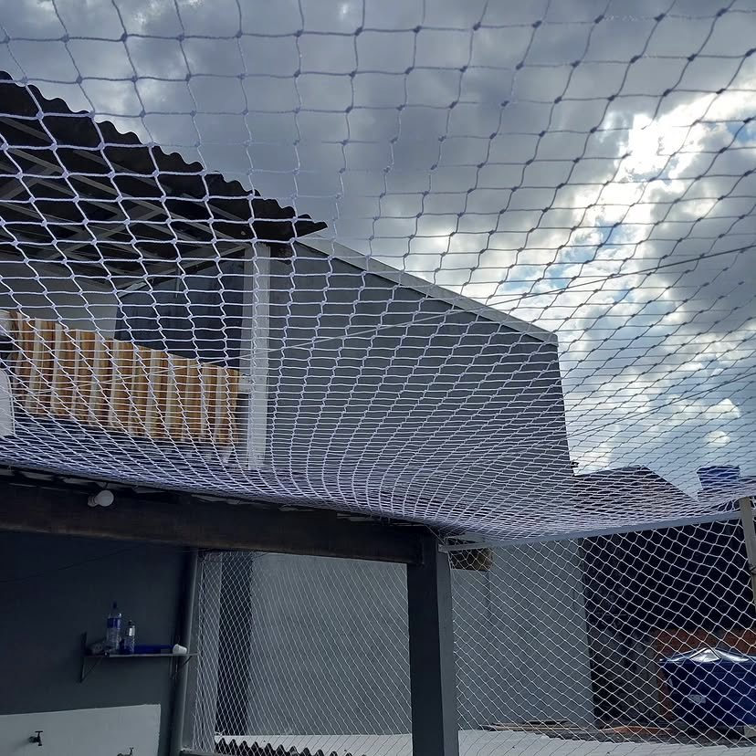
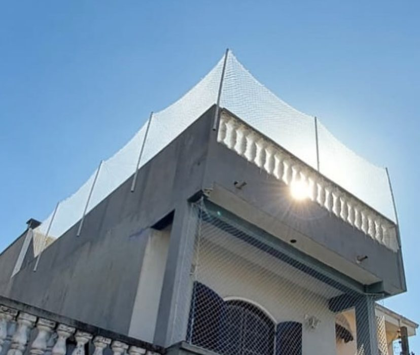
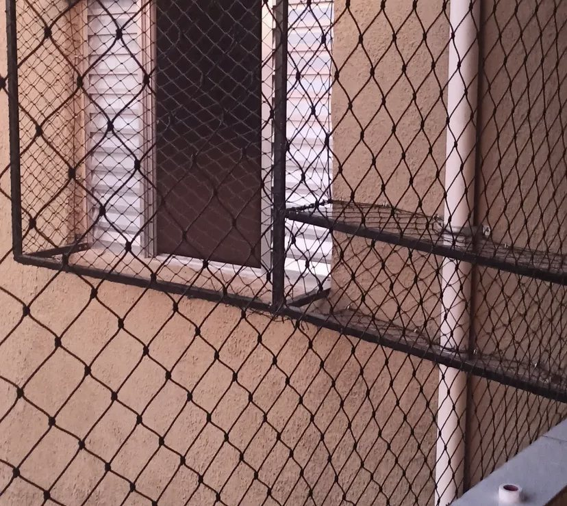
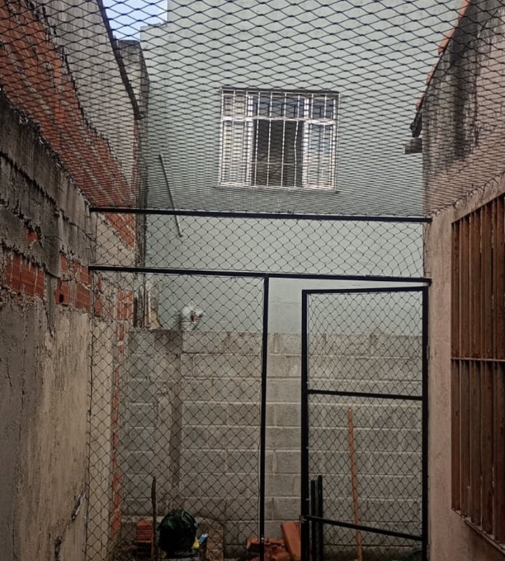
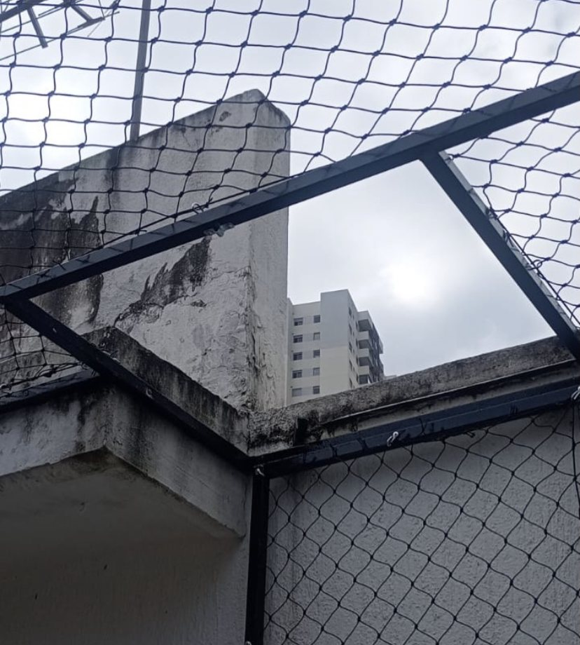
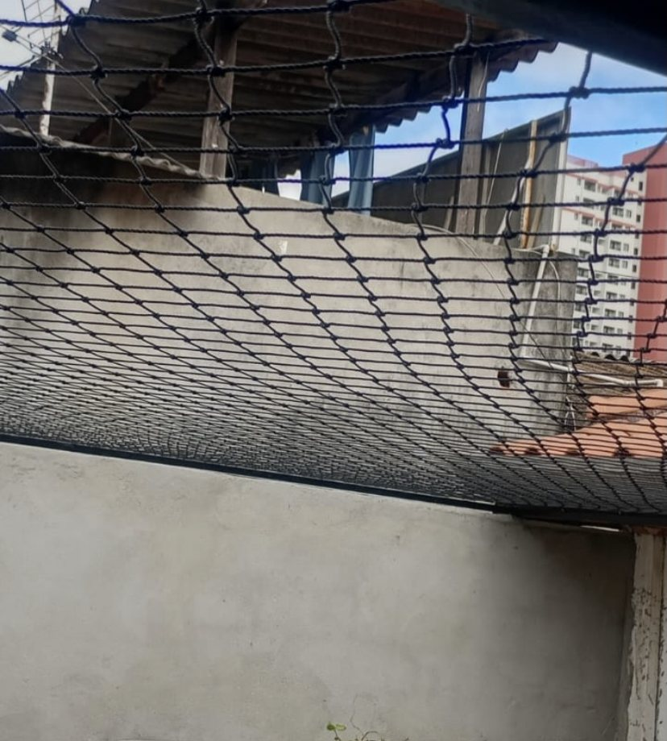

Janelas
Rede firme e discreta que mantém a ventilação e a vista, sem o risco de quedas.
Janelas, sacadas, gatis e áreas abertas com rede de alta resistência e estrutura sob medida. Instalação limpa, sem perder a vista e com orçamento sem compromisso.

Cada projeto é medido e montado para o seu espaço. Você escolhe a cor da rede e nós cuidamos do resto.
Rede firme e discreta que mantém a ventilação e a vista, sem o risco de quedas.
Fechamento completo para aproveitar a varanda com crianças e pets em segurança.
Áreas totalmente isoladas com estrutura metálica, para o seu gato curtir o ar livre.
Cobertura de áreas abertas, corredores e telhados com rede tensionada e bem fixada.
Quadros e suportes sob medida que dão estabilidade à rede onde não há parede para fixar.
Seu pet é parte da família e merece estar seguro em todos os cantinhos da casa.
Algumas instalações recentes. Cada uma pensada para o espaço e para quem vive nele.





Mande uma mensagem com fotos do local e conte o que precisa proteger.
Avaliamos o espaço e passamos um orçamento claro, sem compromisso.
Montamos rede e estrutura com acabamento caprichado e deixamos tudo organizado.
Janela aberta, pet no sol e você tranquilo. Simples assim.
Seu pet é parte da família. E merece estar seguro.
Proteção sob medida para quem mais importa: crianças, gatos, cachorros e toda a família aproveitando a casa sem medo.
Nada de kit pronto: cada rede é cortada e montada para o seu vão.
Rede e fixações de qualidade, pensadas para durar ao sol e à chuva.
Fazemos a estrutura metálica quando o espaço pede mais estabilidade.
Você fala com quem instala, do primeiro contato ao acabamento.
Não. A malha é vazada e discreta: o ar e a luz passam normalmente. Para quem quer ainda menos impacto visual, a rede pode ser na cor que combina melhor com a fachada.
A rede de proteção é feita para aguentar o dia a dia com pets. Para gatis e áreas maiores usamos estrutura metálica, o que deixa tudo mais firme e estável.
Depende das medidas, do tipo de instalação e se o local precisa de estrutura. Mande fotos e as medidas aproximadas e passamos um orçamento sem compromisso.
Sim, é a nossa especialidade. Corredores, telhados, terraços, janelas com passagem para gato: avaliamos o espaço e propomos a melhor solução.
Clique em “Pedir orçamento grátis” e mande uma mensagem com fotos do local. Respondemos o mais rápido possível.
Envie fotos do espaço e receba seu orçamento sem compromisso.